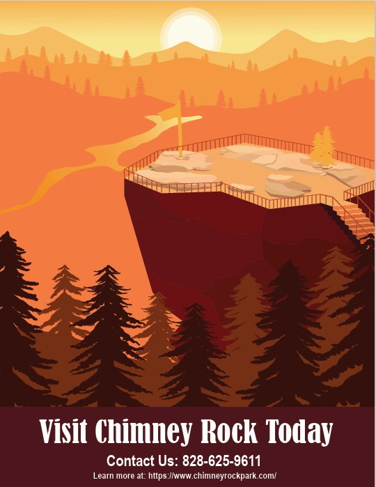
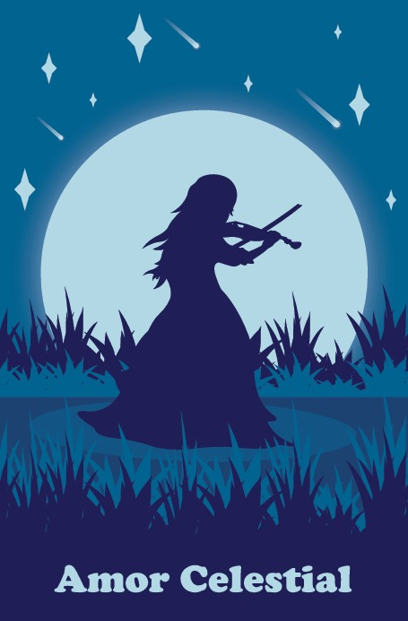
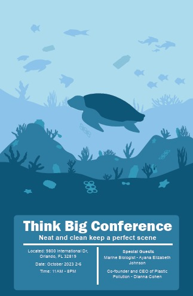
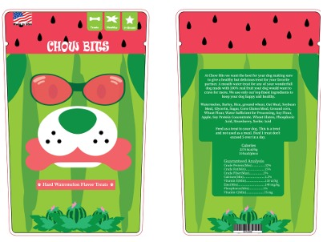

Alexander Hernandez
Graphic Designer
I'm currently a student studying at Wake Tech aspiring to be a graphic designer. What I enjoy doing in my free time when I have no work to do is playing piano, watching anime, playing video games and going outside to jog for a while. I enjoy the winter and fall seasons since it gets colder at that time and the outside view at that time is phenomenal since it's covered with leaves or snow.
What I hope to do when I graduate would be to find a graphic design job that would fit me well. I would like to make illustrations of certain areas like creating travel posters or any fun work with illustration, I would also like to develop logos and package designs for my clients and maybe make designs for shirts and pants. If I can't find a job right away then I would either study more and head to university and maybe go for the master's degree or start freelancing and take small jobs and build experience as I go to gain more ideas and contacts.
Featured Projects
Here are some projects I have created over this year.
Chimney Rock Travel Poster
This is a travel poster that I designed in one of my graphic design course. I had to choose a location in North Carolina and make a vector poster design of that certain location. I decied to go with Chimney Rock since I had pictures of the place so I could use to help me design the poster.
View project / case studyMusic Band Poster
This is a band Tshirt that I had design in one of my designing classes. I had to choose a genre of muisc and create an illustration of that type of music, I wanted something classic but majestic so I went with orchestra and choose a violinist. At that time I was inspired by a show I was watching so that's what gave me the idea of choosing a violinist. In this project we were only allowed to use three spot colors so I had to choose these colors wisely, eventually, I settled in with an array of blues and went with a night theme set I made some grass and a big glowing moon so when the violinist plays the moon would reflect off her.
View project / case studyThink Big Poster
This is one out of three posters for the company Think Big. For this assignment, I had to create promotional material for the Think Big project so I used the current subject which was ocean population and created an ocean filled with sea life but trash was everywhere on the sea floor. This poster is meant to show that trash won't disappear even if we throw it into the ocean.
View project / case studyDog Treat Package
On this project, I had to create a dog treat package with the theme being summer. At first, I was going to create a beach design package but I gave it more thought and decided to go with a watermelon, I tried something new which was having the dog be the watermelon so I combined those two things and came out with the watermelon dog a nice and sweet refreshing design.
View project / case studyWork Experience
Optional paragraph for work experience summary. Not a part of the job details. Delete if not being used.
Grphic Designer
No Name
Date at job
I don't have a job yet
Optional list:
- Delete this list if you don't need it.
- Created...
- Lead...
- Responsible for...
Education
Wake Tech Community College - Raleigh
Designation received or program name, 2022
Summary or accomplishments.